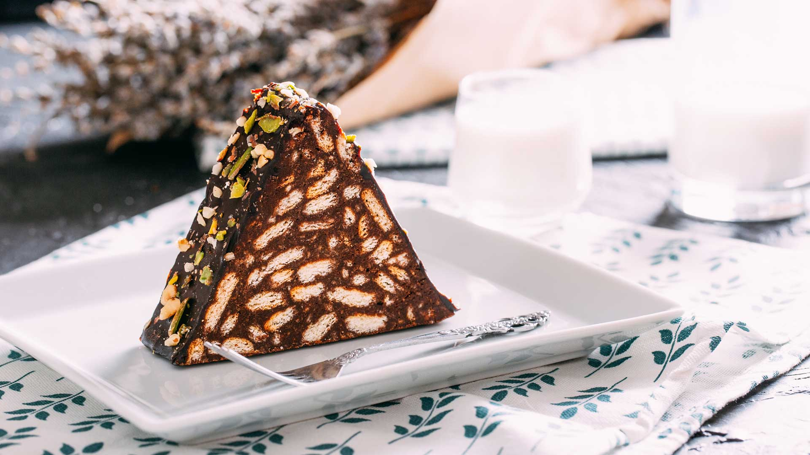

Back to Recipes
Chocolate Cake
Ingredients:
- 300 grams petibor biscuits
- 1 glass of water Milk
- 3 tablespoons of cocoa
- 5 tablespoons of sugar
- 3 tablespoons melted butter/margarine
- 1 cup walnuts or hazelnuts (optional)
Instructions:
- For the mosaic cake, we first break the biscuits, being careful not to break them too much. We melt margarine or butter in a pan.
- Mix the melted butter, milk, sugar and cocoa well in a bowl. We pour the mixture we have obtained on the biscuits that we have broken, or on the contrary, you can add the biscuits into this mixture
- At this stage, you can optionally add walnuts, hazelnuts or pistachios. Then, being careful not to crush the biscuits, mix them well.
- We take the mixture between the stretch foil and give it a roll shape with our hands, or if you have a long thin container, you can place it inside it, it will be more smooth shaped.
- Before serving, let it rest for 2-3 hours in the freezer. Then we serve it by slicing.